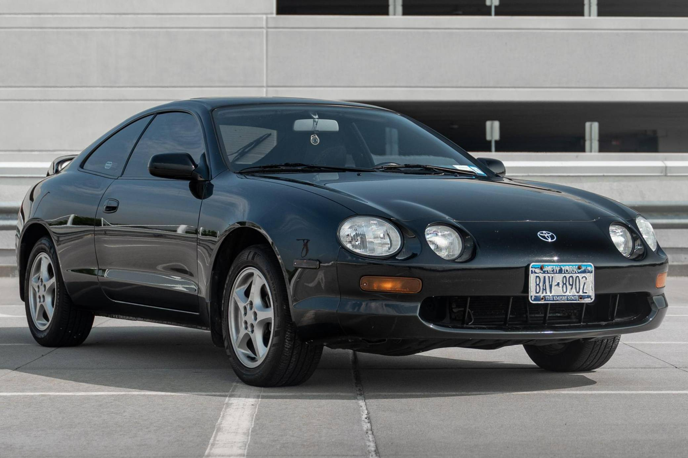
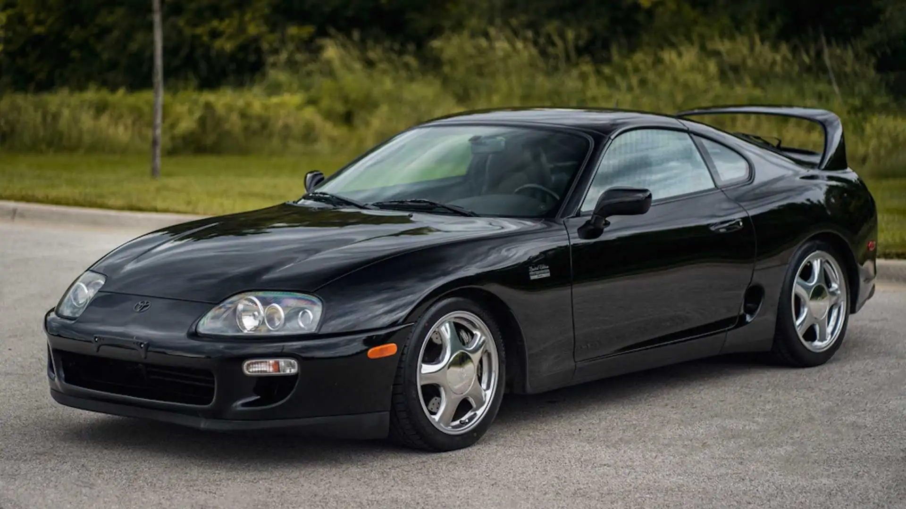
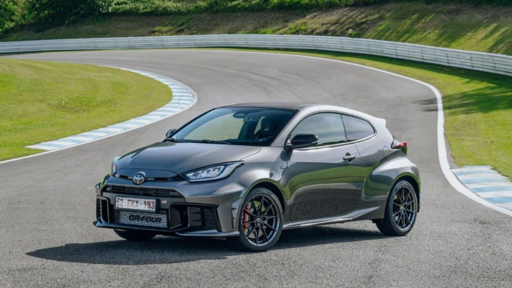

TOYOTA

Celica
Tipo de motor: V6 3.7
Traccion Trasera

Supra
Tipo de motor: un motor de seis cilindros en línea turboalimentado de 3.0 litros
Traccion Trasera

Yaris Gr
Tipo de motor: 2.5 - 6 Cilindros en línea
Traccion Trasera